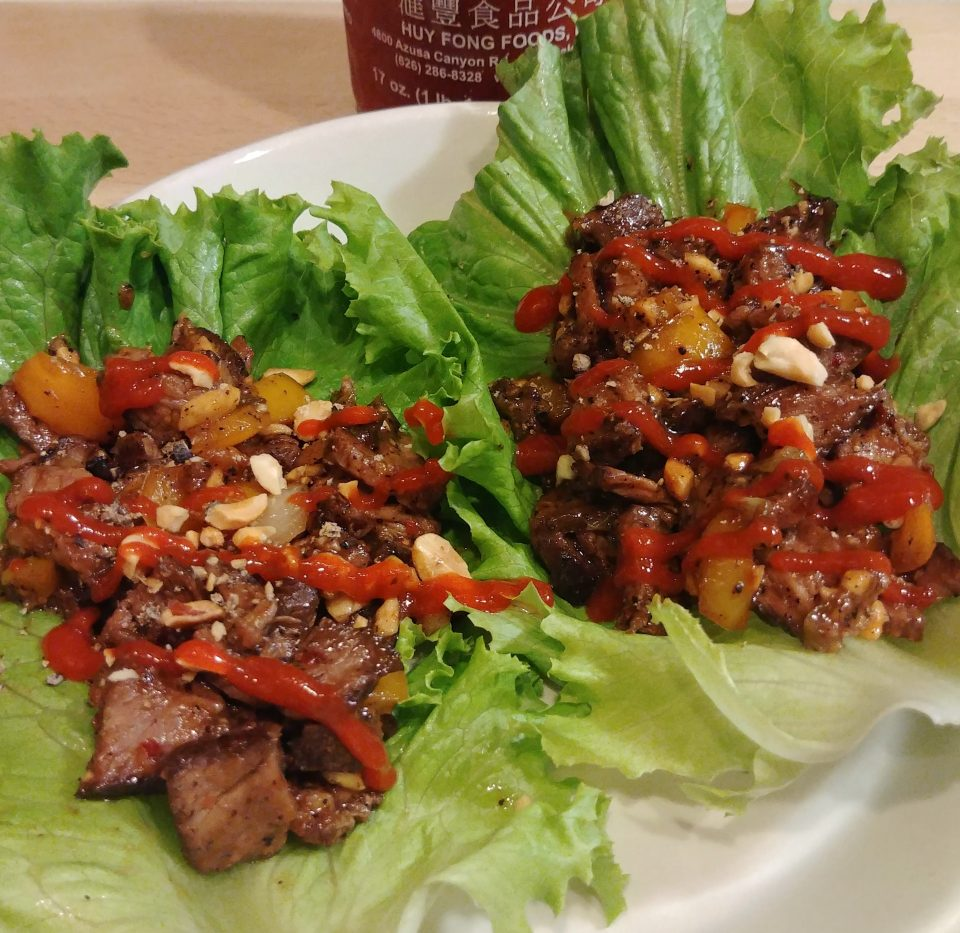

Beef Rap

Description of Dish
Beef Rap is a recipe for an asian inspired lettuce wrap made with steak and veggies.
This recipe is inspired by the title track "Beef Rap" off of MM...FOOD.
Ingredients
- 1 head large leaf lettuce
- 2 teaspoons vegetable oil
- 1 pound beef (ground or thin-sliced steak)
- 1 bell pepper, diced fine
- 2-inch piece ginger, peeled and finely grated
- 2 scallions, chopped
- 2 cloves garlic, minced
- 2 tablespoons soy sauce
- 1 teaspoon red pepper flakes
- 1/4 cup hoison sauce
- 1/4 teaspoon kosher salt
- 1/4 teaspoon black pepper
- 1/4 cup chopped peanuts
Steps
- Separate and clean the lettuce. Dry the leaves and set them aside.
- In a skillet over medium-high heat, add the vegetable oil and saute beef until brown.
- Stir in ginger, scallions, garlic, and bell pepper. Saute this for 2 minutes.
- Add soy sauce, red pepper flakes, hoison, salt, and pepper and cook for 1 minute.
- Remove from heat and stir in the peanuts. Serve while warm wrapped in lettuce.